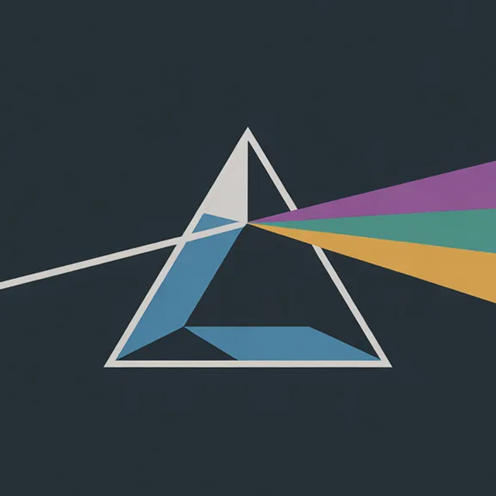

Loading the public bug tracker…

Known issues, public progress, and fixes. Open a card to read the anonymized discussion.
Community authors use per-post pseudonyms. Team replies carry a TEAM badge, Dev replies may show the Dev name, and attachments are served from this site rather than Discord.
Loading the public bug tracker…